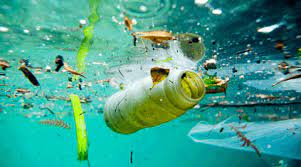
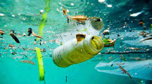
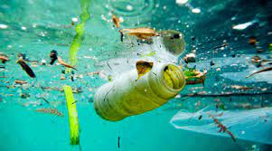

If you wish to stay today I will be telling you about water pollution since it is such a big problem.
So what is water pollution?
Water pollution is the release of substances into bodies of water that makes water unsafe for human use and disrupts aquatic ecosystems.
What causes water pollution?
Water pollution can be caused by a plethora of different contaminants, including toxic waste, petroleum, and disease-causing microorganisms.
In other words water pollution is caused by all the unnatural things we put into the water. Making it no longer suitable for animals and for consumption by humans.
Information by Jerry A. Nathanson. Click here to go to Britannica



This is just a little peak at what our water looks like now.
So what human activities causes water pollution?
Many industrial sites produce waste in the form of toxic chemicals and pollutants, and though regulated, some still do not have proper waste management systems in place. In those rare cases, industrial waste is dumped into nearby freshwater systems. When industrial waste is not treated properly (or worse, not treated at all), it can very easily pollute the freshwater systems that it comes into contact with.
The process of marine dumping is exactly what it sounds like, dumping garbage into the waters of the ocean. It might seem crazy, but household garbage is still collected and dumped into oceans by many countries across the world.
Harmful chemicals, bacteria and pathogens can be found in sewage and wastewater even when it’s been treated. Sewage and wastewater from each household is released into the sea with fresh water. The pathogens and bacteria found in that wastewater breed disease, and therefore are a cause of health-related issues in humans and animals alike.
Large oil spills and oil leaks, while often accidental, are a major cause of water pollution. Leaks and spills often are caused by oil drilling operations in the ocean or ships that transport oil.
In order to protect their crops from bacteria and insects, farmers often use chemicals and pesticides. When these substances seep into the groundwater, they can harm animals, plants and humans.
Rising temperatures due to global warming are a major concern in terms of water pollution. Global warming causes water temperatures to rise, which can kill water-dwelling animals. When large die-offs occur, it further pollutes the water supply, exacerbating the issue.
Radioactive waste from facilities that create nuclear energy can be extremely hazardous to the environment and must be disposed of properly. This is because uranium, the element used in the creation of nuclear energy, is a highly toxic chemical. Unfortunately, accidents still occur at these facilities, and toxic waste is released into the environment. Please go to The East Central University Online for more information.
There are ways that you can prevent water pollution, and the The Natural Resources Defence Council give a few was you can.
Never flush nondegradable objects such as baby wipes or any thing plastic down the toilet. What you flush might end up on the beachs or in a river.
The sink is just as bad as the toilet. Never let oil, paint or other household prouduct go down the sink. The contain toxic chemicals that can get into our water supply which would be very bad.